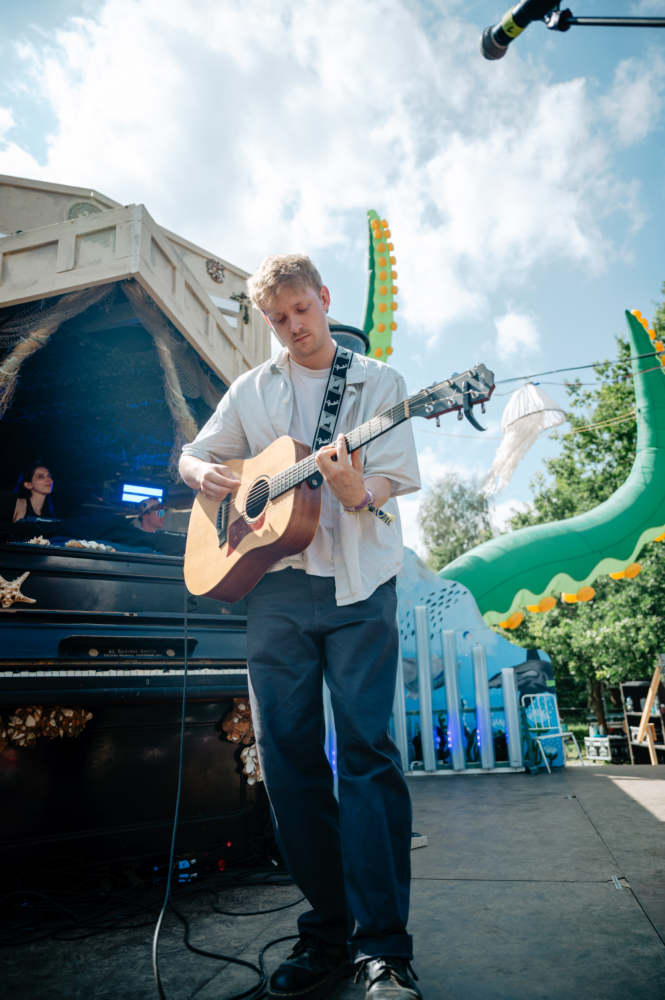
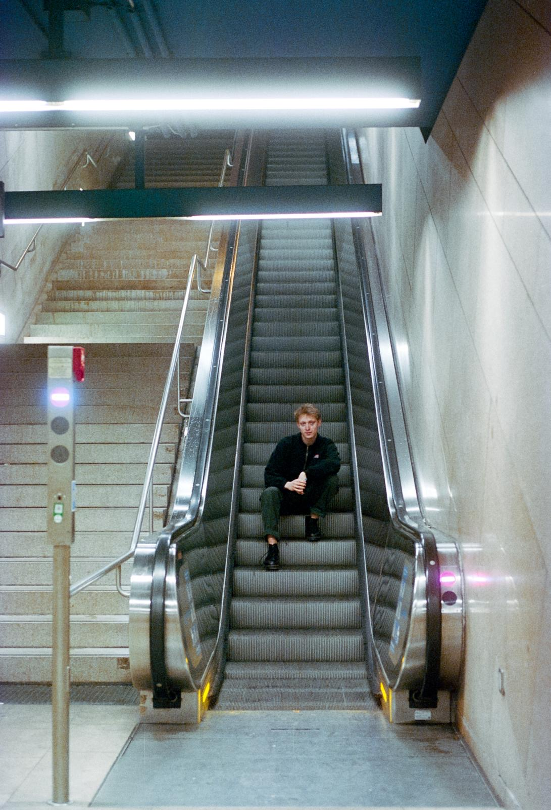
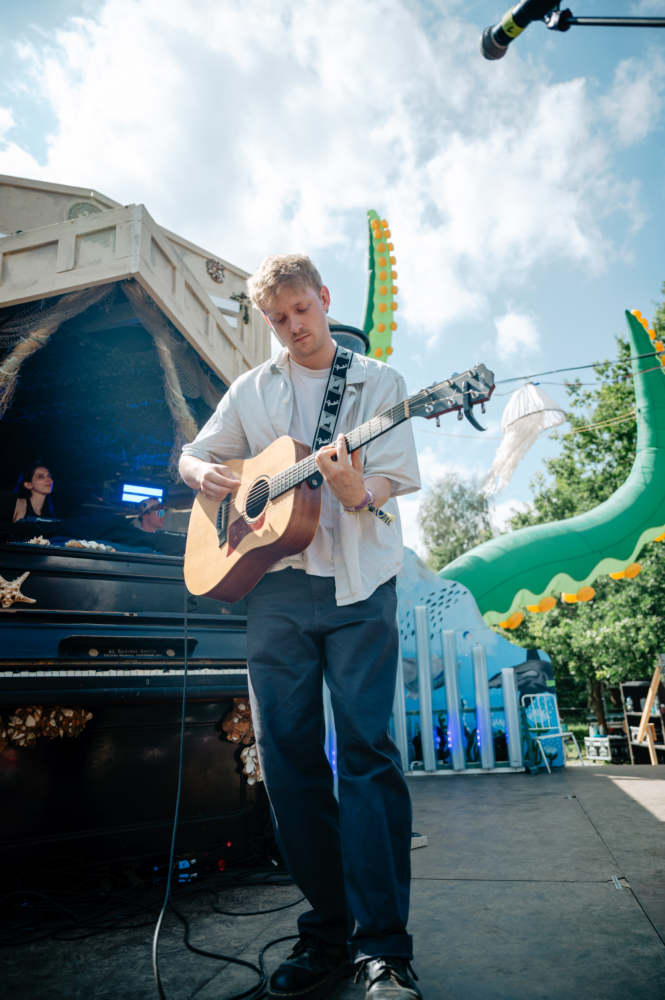
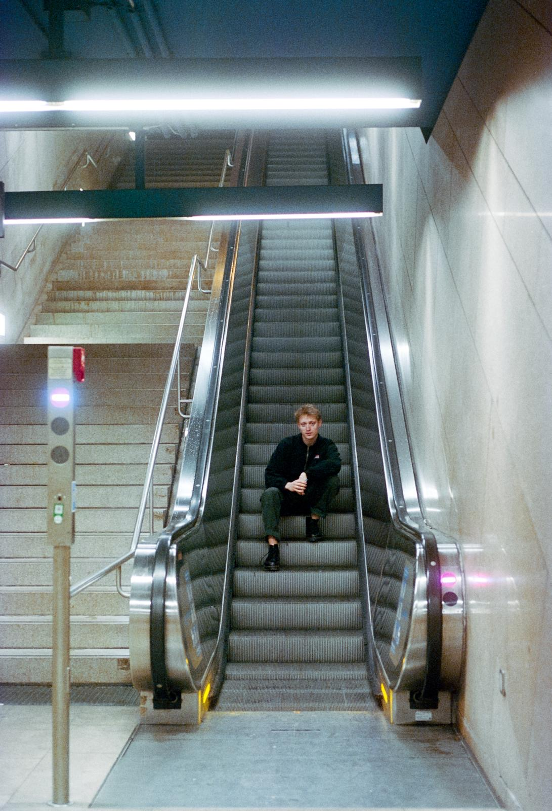

FINN — Presskit
Alle Infos, Zahlen, Biografie und Fotos für Medien, Booking und Veranstalter.
 Kein Schlaf
Kein Schlaf
 Marathon
Marathon
 Blitzlicht
Blitzlicht
Features & Releases
Die erste deutsche Single, die FINNs Stil definiert.
Geschrieben im Ausland – eine Single mit emotionaler Tiefe.
Kollaboration mit TONAN & valiente – ein energiegeladener Track.
Biografie
Frühe Jahre
FINN entdeckte bereits in seiner Schulzeit seine Leidenschaft für Musik. Als Gitarrist in Big Bands und Jazz-Ensembles sammelte er erste Erfahrungen, bevor Gesang und Soloauftritte in Münchner Bars wie dem Import Export und Lost Weekend in den Vordergrund rückten.
2024 — Durchbruch
Mit „Blitzlicht" veröffentlichte FINN seine erste eigene Musik auf Deutsch. Es folgten Auftritte bei studentischen Festivals wie dem StuStaCulum und dem Garnix Festival, die seine wachsende Präsenz in der Szene manifestierten.
2025 — Festival Highlight
Nach der Veröffentlichung seiner beiden jüngsten Songs gipfelte FINNs Live-Historie in einem Auftritt auf dem Pangea – About You Festival 2025, einem der bedeutendsten Festival-Auftritte seiner Karriere.
Event-Band 4attic
Außerhalb seiner Solokarriere sammelt FINN Bühnenerfahrung mit seiner Event-Band 4attic. Auftritte umfassen die Pasinger Vorwiesn, Firmenfeiern, private Poolpartys und das Menzinger Winzerfest.
Medimeisterschaften
Auch abseits seines Soloprojekts konnte FINN große Erfolge feiern:
Dr. Oetker
427.000 Spotify-Streams
BLUB
66.000 Spotify-Streams
Live vor bis zu 10.000 Festivalgästen (2023-2025)
Radio Feature
BAYERN 3 POP Radar – Song der Woche (KW34 2025)
Was kommt als Nächstes?
Neben den bereits releasten Songs bereichert FINN seine Live-Performances mit zahlreichen noch unreleasten Tracks seiner kommenden EP.
Artist Fotos


 


